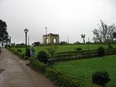
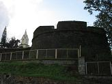
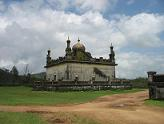
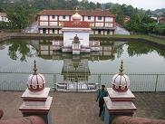
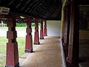
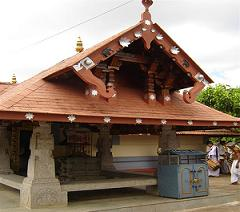
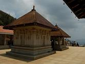
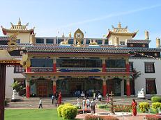
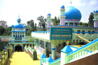

Baby Cottage
Raja's Seat
According to legend, the Kings of Coorg spent their evenings with their consorts here. A photographic view of the lofty mountains, grassy meadow, steep dale, wide spread paddy fields can be enjoyed from Raja’s Seat.
Romantic sunset gratifies every aching heart. An early morning walk through the pergola makes you feel perfect with the freshness of heavenly air and a spectacular view of the mesmerizing misty mountains. The beautiful park, the toy train and children’s amusements area makes Raja’s Seat worth seeing. Inside the "toy train" station you can try local charmuri, pani-poori and gobi-manchurian. Request them to make it extra-spicy during winter season and you will never forget the great experience!. Entry ticket or admission ticket in to the park is Rs 5/- per person.
How to reach Raja's Seat:Location: Mercara City
Mercara Fort
The strong fort of Mercara explains the tale of bravery and battle. Original fort built by mud was replaced by "The Sword of Mysore", Tippu Sultan. Two life-size Elephants made of mortar attract every visitor entering the fort.
How to reach Madikeri Fort:
Location: Mercara City
Gaddige or Gadduge
Gaddige/Gadduge, the tombs of King Virarajendra, Lingarajendra and one of their court priests built in the 18th century rest in the northern corner of the town. Two smaller tombs are also located in the same area belonging to their brave and loyal soldiers. The three main tombs, with a dome in the center and turrets at each end, built separately from one another on a hillock resemble a Muslim pilgrim center. The bars of windows made of brass have fine engravings.A colorful view of the town, mostly residential areas and the flora, can be seen from a different angle.
How to reach Gaddige/Gadduge:Location: Mercara City
Omkareshwara Temple
Omkareshwara temple, deidcated to Shiva, was built in the 19th century in a mix of Gothic and Islamic styles. It was built by Lingarajendra in 1820. There is a pool in front of the temple with tons of fresh water fishes in it. The temple has four minarets around it and a dome in the center (similar to a Muslim Masjid).
How to reach Omkareshware Temple:
Location: Mercara City
Nalknad Aramane (Palace)
After escaping from Tippu sultan's troops Doddavirarajendra, a Haleri ruler built this palace at Yavakapadi in Nalknad area. This simple palace is famous for its paintings and carvings. Doddaverarajendra married Mahadevammaji here in 1796. While British army entered Kodagu, the last emperor of Halari family Chikaverarajendra took shelter here. It is located near a village named Yavakapadi and was built between the years 1792 and 1794 A.D. Now this palace belongs to Archaeology department.The highest peak of Kodagu, Thadiyandamole is situated nearby.
How to reach Nalknad Aramane/Palace:Location: Kakkabe town
Distance: 45 km from Madikeri via Napoklu in Kakkabe
Padi Igguthappa Temple
Padi Iggutappa Temple recembling most of the ancient Keralite temples, in style, is situated in Igguthappadevara betta located in Aiyengeri forest near Kakkabe. It is the supreme diety of worship for the Puthari festival (Harvesting Festival of Coorg).
Iguthappa is another name for Lord Subramanya. The Annual festival is held in the month of March during which time people from all over gather here to offer special prayers. “Tulabhara”, the art of weighing oneself against fruits, sugar, coconuts, rice etc, is an important offering here. This temple is also an important part of Kodava Culture and tradition.
Timings: Open 5.30 am - 2 pm, 6 - 7 pm
Location: Kakkabe Town
Distance: 45 Kms from Mercara city towards Virajpet.
Transport: Private buses are available from Madikeri, Virajpet and Napoklu.
Talacauvery
Talacauvery, the birth place of River Cauvery is situated on the slopes of the Brahmagiri hills at an altitude of 4187 ft above sea level. It is 2 Kms from Bhagamandala town, which is approximately 34 Kms from Madikeri. Famous Bhangandeshwara temple attracts thousands of religious people from across India especially on every October 17th, on Tulasankramana [Cauvery Sankramana] when grand prayers are held. It is believed that wrong doings/sins are pardoned by taking a dip in the holy river or the Triveni Sangama [tri – three, Sangama – meet; three rivers meet here viz Cauvery, Sujyothi and the Kanike].
This place is enormously blessed with nature. One an have a panoramic view of Coorg from here. The way that leads to the place and the place itself is photogenic. Sunset and sunrise both are mesmerizing.
How to reach Talacauvery, Bhagamandala:Location: Near Bhagamandala Town
Distance: 40 kms from Madikeri towards Mangalore; 8 Kms from Bhagamandala Town.
Tibetan Colony/Camp and the Buddhist Temple
The moment you enter this tiny colony the whole world changes!! You feel as if you are in Tibet! ByleKuppe is one of the largest Tibetan settlements in India, around 16000 refugees and nearly 6000 monks and nuns. Set up in 1960, Bylakuppe is a small town situated 6 kms from Kushalnagar or 42 Kms from Mercara, the place has several monastries and the famous among them are the Great Gompa of Sera Je, Sera Mey and the Namdroling monastery.
Another important monastery is the Tashi Lhumpo monastery, the seat of the Panchen Lama. Buddhist refugee camps at Bylakuppe have prayer halls which houses beautiful 40 ft idols of Buddha and Padmasambhava. The Tibetan SOS Children's Village is located here. The Mahayana Buddhist University is at Sera village. The gold-coated Buddhist statues in the monastery are impressive.
Dalai Lama often visits the place. The friendly people never come out without wearing a heavenly smile. Visitors are wholeheartedly greeted by the decorated shops where you get some genuine Tibetan/Chinese products. The delicious food in a Chinese Restaurant will add to your unforgettable memory list.
Location: On the way to Kushalnagar/ Mysore
Distance: 41 kms from Madikeri; 6 Kms from Kushalnagar
Dargah sharief of Yemmemadu
Dargah Sharief, the Holy Tomb, of Yemmemadu is one of the most sacred shrines for Muslims in Kodagu district. It is the 'Dargah' or the tomb of Hazrath Sufi Shaeed and Sayyed Hassan Sakaf Halramir who came from Persia and devoted their life to the service and upliftment of the poor and downtrodden. Sufi Shaeed came to Yemmemadu around 366 years ago to give religious discourses and to help the poor. He soon attracted people of all faiths due to his views and practices. People belonging to various faiths visited the place ever since.
Every year 'Urus' or 'Urs' is held here for eight days in their remembrance where devotees gather in large numbers. About three to four lakh devotees cutting across caste, creed, and religion visit this sacred shrine. The number of people visiting Yemmemadu Darga Sharief, mostly from Karnataka and kerala State, has increased of late. On the last day of the 'Urs' food is served to all the visitors. Females are denied entry into the 'Darga' or the tomb for historic reasons. Separate arrangements has been made to enable them to offer prayers. The Yemmemadu Tajul Islam Muslim Jamaat and the management committee of the Sahidiya Orphanage supervised the Urus and the Darga. The orphanage was constructed in 1997 through public donations.
Note: Muslims do not worship 'Dargah' or the Holy Tomb of Saint/s rather they worship God Almighty through the holy man laid in the tomb; For their blessings are considered most healing as saints or 'Sufis' (Soofi) are considered to be very close to God with their persona, devotion, purity and worships. Sufism is a mystical dimension of Islam.
How to reach Yemmemadu Dargah Sharief:Location: 35 Kms from Madikeri; Madikeri-Bettageri-Napoklu-Hale Taluku-Yemmemadu